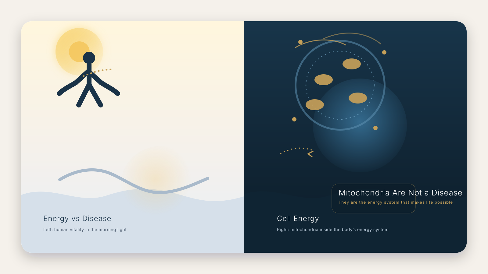

Are Mitochondria a Disease?
Understanding the Difference Between Mitochondria, Mitochondrial Dysfunction, and Mitochondrial Disease
No. Mitochondria are normal parts of cells that help make ATP, the energy cells use to function. The confusion usually comes from mixing up mitochondria, mitochondrial dysfunction, and mitochondrial disease.

What mitochondria are
Mitochondria are organelles inside most human cells. Their main job is to help turn nutrients and oxygen into usable energy. That is why they are often called the cell's energy system.
Because almost every tissue depends on energy, mitochondria matter most in places that work hard all the time: muscle, brain, heart, nerves, eyes, ears, and digestion.
What people usually mean when they ask the question
When someone asks whether mitochondria are a disease, they are usually really asking a different question:
What is the difference between normal mitochondria, a mitochondrial problem, and a real mitochondrial disorder?
That distinction matters. A cell can have less efficient energy production without the person having a primary mitochondrial disease. Fatigue, stress, sleep loss, inflammation, aging, infection, or other illness can all affect mitochondrial performance without turning mitochondria themselves into a disease.
Mitochondria, dysfunction, disease
This is the critical boundary: normal biology can move into reduced function, and reduced function can become a persistent medical problem.
Why this distinction matters for fatigue
Fatigue is common, but it is not specific. By itself, it can come from sleep problems, anemia, thyroid issues, depression, infection, overtraining, medication effects, or many other causes.
It becomes more important to look deeper when fatigue appears with muscle weakness, exercise intolerance, poor recovery, neurologic symptoms, digestive problems, vision or hearing changes, or a pattern that affects more than one organ system.
That is why the best first move is not to label mitochondria as a disease. The better move is to ask what is actually happening in the energy system, and whether the person is dealing with dysfunction, a broader medical condition, or something else entirely.
What readers should remember
Mitochondria are not a disease. They are part of normal human biology.
The real question is not whether mitochondria are a disease, but whether the body's energy system is functioning as it should.
Understanding that difference is the first step toward understanding fatigue, recovery, aging, mitochondrial dysfunction, and mitochondrial disease.
If you want the energy foundation first, start with What Is ATP? and then move into What Is Mitochondrial Health?.
Energy is not just a mechanism. It is what makes life possible.
Real human experience
Many people first encounter mitochondria after years of unexplained fatigue, poor recovery, exercise intolerance, digestive problems, or symptoms that seem to involve more than one body system.
One common pattern is a long search for answers before a mitochondrial disorder is finally considered. The detail of each story is different, but the emotional shape is often similar: something feels wrong, the body stops rebounding the way it used to, and the search for an explanation begins.
Stories do not prove a mechanism. They do remind us why the body's energy system matters in real life, not just in textbooks.
Common questions
Does fatigue alone mean mitochondrial disease?
No. Fatigue has many possible causes, and mitochondrial disease is only one of them.
Can mitochondria be part of a problem without disease?
Yes. Mitochondrial dysfunction can appear in other illnesses, aging, inflammation, or stress states without meeting the definition of a primary mitochondrial disease.
What should readers remember most?
Mitochondria are not the disease. They are the system that may be affected.